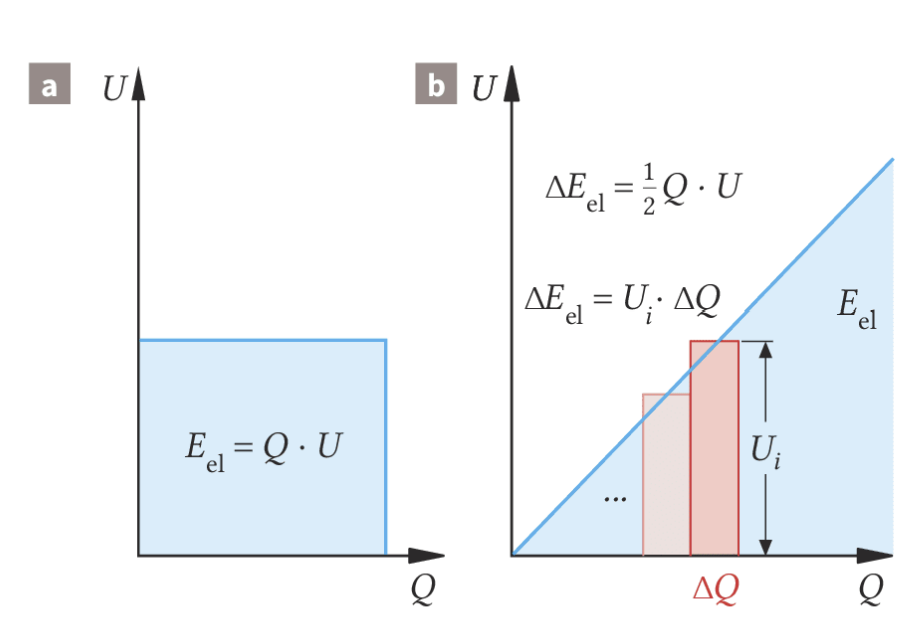
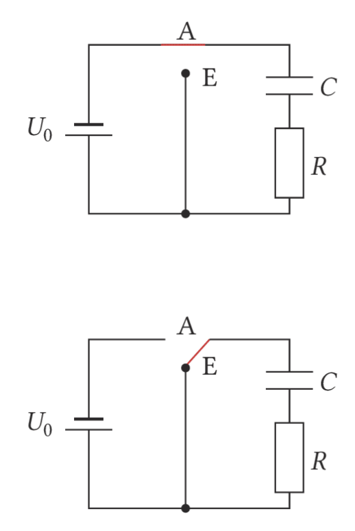
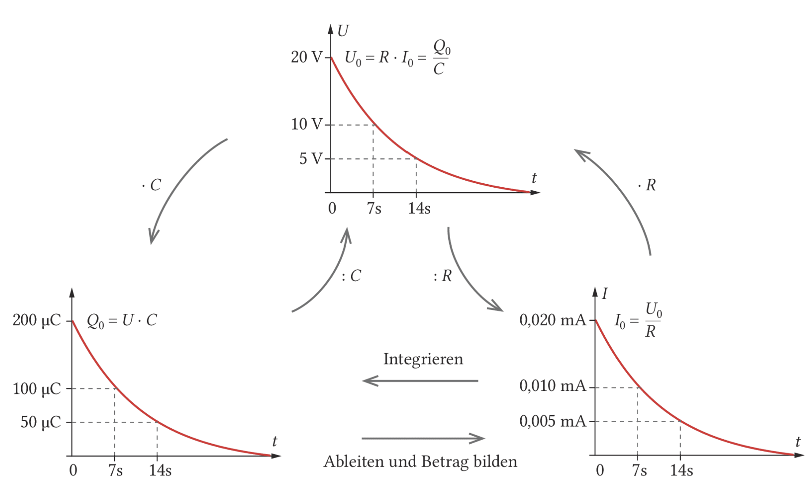
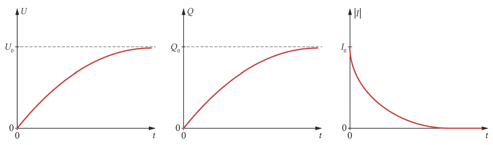
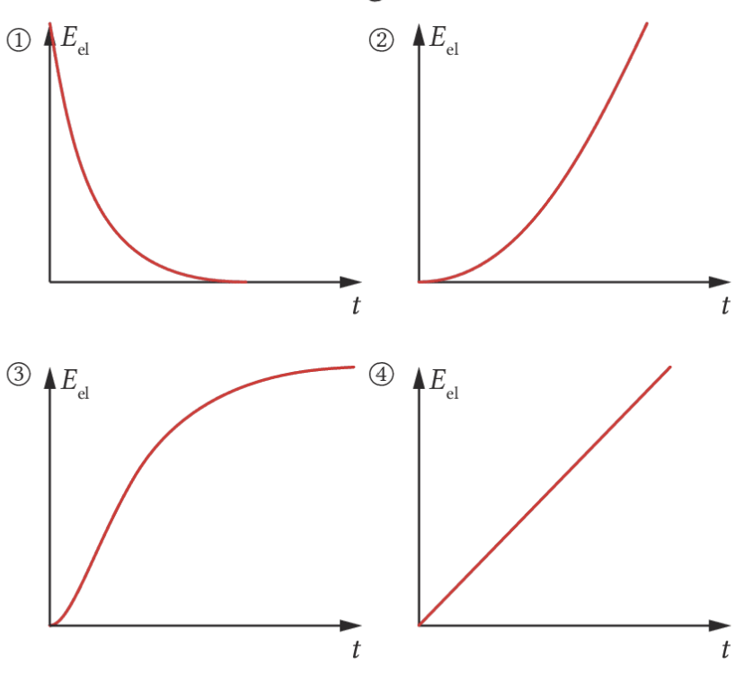

Fortsetzung zu Elektrische Felder 2: Jetzt geht es darum, wie viel Energie ein Kondensator speichern kann und warum Laden und Entladen nicht gleichmäßig, sondern exponentiell ablaufen.
Eine Fahrradrückleuchte kann noch weiterleuchten, obwohl du nicht mehr trittst. In vielen solchen Schaltungen sitzt kein Akku, sondern ein Kondensator. Beim Fahren wird er geladen, danach gibt er seine gespeicherte Energie langsam an die LED ab.
Die Leitfrage dieser Seite lautet: Wie hängen Ladung, Spannung, Energie und Zeitverlauf bei einem Kondensator zusammen?
Beim Kondensator speicherst du Ladung getrennt auf zwei Platten. Dadurch entsteht Spannung, und im Feld zwischen den Platten steckt elektrische Energie.
Beim Laden wächst die Spannung erst schnell und dann immer langsamer. Beim Entladen fällt sie erst schnell und dann immer langsamer. Dieses Verhalten erkennst du an Exponentialkurven.
Ein Kondensator ist nicht nur ein Ladungsspeicher, sondern auch ein Energiespeicher. Entscheidend sind Kapazität \(C\), Spannung \(U\), Ladung \(Q\) und beim Laden/Entladen zusätzlich der Widerstand \(R\).
Wenn die Spannung beim Aufladen konstant wäre, könntest du die Energie einfach mit \(E_\mathrm{el}=Q\cdot U\) berechnen. Beim Kondensator ist das aber nicht der Fall: Zu Beginn ist der Kondensator ungeladen, deshalb ist seine Spannung zunächst null. Je mehr Ladung schon getrennt wurde, desto größer wird die Spannung und desto mehr Arbeit ist nötig, um weitere Ladung auf die Platten zu bringen.
Im \(U\)-\(Q\)-Diagramm entspricht die aufgewendete Energie einer Fläche. Weil \(U\) proportional zu \(Q\) wächst, ist diese Fläche beim idealen Kondensator ein Dreieck.

Für kleine Ladungspakete \(\Delta Q\) ist die Spannung während eines Einzelschritts fast konstant. Die kleine Energie ist dann \(\Delta E_\mathrm{el}=U_i\cdot\Delta Q\).
Alle kleinen Rechtecke zusammen nähern die Dreiecksfläche unter der Geraden an. Deshalb ist die Gesamtenergie halb so groß wie \(Q\cdot U\).
\(\Delta E_\mathrm{el}=U_i\cdot\Delta Q\)
So beschreibst du die Energie für ein sehr kleines zusätzliches Ladungspaket beim Aufladen.
\(E_\mathrm{el}=\frac12 Q\cdot U=\frac12 C\cdot U^2=\frac{Q^2}{2C}\)
Das ist die Energie eines geladenen Kondensators. Beim Entladen kann diese Energie wieder frei werden.
Bei einem Akku ist die Energie an chemische Vorgänge in Materie gebunden. Beim Kondensator ist die Sichtweise anders: Die Energie steckt im elektrischen Feld zwischen den Platten. Auch wenn ein Dielektrikum im Kondensator liegt, wird es beim Entladen nicht verbraucht.
Setzt du in die Energieformel eines Plattenkondensators \(U=E\cdot d\), \(C=\varepsilon_0\varepsilon_r\cdot A/d\) und \(V=A\cdot d\) ein, erhältst du eine Formel, in der die Energie vom Feld und vom durchsetzten Volumen abhängt.
\(E_\mathrm{el}=\frac12\varepsilon_0\varepsilon_r E^2\cdot V\)
Die Energie eines homogenen elektrischen Feldes hängt quadratisch von der Feldstärke \(E\) und linear vom felddurchsetzten Volumen \(V\) ab.
\(\rho_\mathrm{el}=\frac{E_\mathrm{el}}{V}=\frac12\varepsilon_0\varepsilon_r E^2\)
Die Energiedichte gibt an, wie viel elektrische Energie pro Volumen im Feld steckt.
Ist der geladene Kondensator von der Spannungsquelle getrennt, bleibt die Ladung auf den Platten erhalten. Wenn du die Platten auseinanderziehst, arbeitest du gegen die elektrische Anziehung. Diese Arbeit erhöht die gespeicherte Energie.
Bei „Spannungsquelle angeschlossen“ bleibt \(U\) konstant. Bei „Spannungsquelle getrennt“ bleibt \(Q\) konstant. Diese Unterscheidung entscheidet oft darüber, ob Energie, Feldstärke und Spannung größer oder kleiner werden.
Beim Laden und Entladen bewegen sich Ladungsträger durch die Leitungen. Diese gerichtete Bewegung von elektrischen Ladungen nennt man elektrischen Strom. Je mehr Ladung in einer bestimmten Zeit durch einen festen Leiterquerschnitt transportiert wird, desto größer ist die Stromstärke.

Ein Kondensator mit \(C=10\,\mu\mathrm F\) wird mit einem Widerstand \(R=1\,\mathrm{M\Omega}\) kombiniert. Die Spannungsquelle liefert zum Beispiel \(U_0=20\,\mathrm V\).
Beim Aufladen misst du \(U_C(t)\), \(I(t)\) und die Zeit, nachdem der Schalter auf A gestellt wurde. Beim Entladen startest du mit geladenem Kondensator und stellst den Schalter auf E.
\(I=\frac{\Delta Q}{\Delta t}\)
Bei konstanter Stromstärke ist \(I\) der Quotient aus transportierter Ladung und benötigter Zeit.
\(I(t)=\dot Q(t)=\frac{\mathrm dQ(t)}{\mathrm dt}\)
Bei veränderlicher Stromstärke ist \(I(t)\) die momentane Änderungsrate der Ladung.
\(1\,\mathrm A=\frac{1\,\mathrm C}{1\,\mathrm s}\)
Ein Ampere bedeutet: Pro Sekunde wird die Ladungsmenge ein Coulomb transportiert.
Direkt nach dem Umschalten auf Entladen ist die Spannung am Kondensator maximal. Sie treibt einen Strom durch den Widerstand. Dadurch werden Ladungen von den Platten wegtransportiert, der Ladungsüberschuss wird kleiner und der Potenzialunterschied nimmt ab.
Weil die Spannung kleiner wird, wird auch der Strom kleiner. Dadurch wird wiederum immer weniger Ladung pro Zeit abtransportiert. Diese gegenseitige Rückkopplung führt zu einer exponentiellen Abnahme.

Das \(U\)-\(t\)-Diagramm und das \(Q\)-\(t\)-Diagramm haben dieselbe Form, weil \(Q=C\cdot U\) gilt. Das \(I\)-\(t\)-Diagramm hat ebenfalls eine Exponentialform, beschreibt aber die Änderungsrate der Ladung.
Wenn sich \(U\), \(Q\) und \(I\) in gleichen Zeitabständen jeweils halbieren, kannst du daraus die Halbwertszeit ablesen.
| \(t\) in s | 0 | 7 | 14 | 28 |
|---|---|---|---|---|
| \(U\) in V | 20 | 10 | 5 | 2,5 |
| \(I\) in mA | 0,020 | 0,010 | 0,005 | 0,003 |
\(U(t)=U_0\cdot 0{,}5^{\,t/T_{1/2}}\)
Mit der Halbwertszeit \(T_{1/2}\) kannst du die exponentielle Abnahme der Spannung beschreiben.
\(Q(t)=Q_0\cdot e^{-t/(RC)}\), \(\quad U_C(t)=U_0\cdot e^{-t/(RC)}\)
Diese Schreibweise nutzt die Zeitkonstante \(RC\). Nach der Zeit \(RC\) ist der Wert auf ungefähr 37 Prozent des Anfangswerts gefallen.
\(I(t)=-I_0\cdot e^{-t/(RC)}\)
Das Minuszeichen hängt von der gewählten Stromrichtung ab: Beim Entladen bewegt sich Ladung entgegengesetzt zum Aufladen.
Beim Aufladen treibt die Spannungsquelle Ladung auf die Kondensatorplatten. Anfangs ist noch keine Gegenspannung am Kondensator vorhanden, deshalb ist die Stromstärke groß. Mit jeder zusätzlichen Ladung wächst die Kondensatorspannung und wirkt dem weiteren Laden stärker entgegen.
Deshalb steigen Spannung und Ladung nicht linear, sondern nähern sich exponentiell ihren Grenzwerten. Die Spannung nähert sich \(U_0\), die Ladung nähert sich \(Q_0=C\cdot U_0\), und die Stromstärke nähert sich null.

Beim Entladen wird der Vorrat an getrennten Ladungen kleiner. Beim Aufladen wird er größer, aber immer langsamer.
Die Stromrichtung ist beim Aufladen entgegengesetzt zur Stromrichtung beim Entladen. Deshalb sind die \(I\)-\(t\)-Diagramme je nach Vorzeichenkonvention an der \(t\)-Achse gespiegelt.
| \(t\) in s | 0 | 7 | 14 | 28 |
|---|---|---|---|---|
| \(U\) in V | 0 | 10 | 15 | 17,5 |
| \(|I|\) in mA | 0,020 | 0,010 | 0,005 | 0,003 |
Die Tabelle zeigt typische Werte zur gleichen Halbwertszeit: Die Spannung nähert sich \(20\,\mathrm V\). Der Strombetrag halbiert sich.
\(Q(t)=Q_0\cdot\left(1-e^{-t/(RC)}\right)\)
Beim Aufladen nähert sich die Ladung exponentiell dem Grenzwert \(Q_0=C\cdot U_0\).
\(U_C(t)=U_0\cdot\left(1-e^{-t/(RC)}\right)\)
Die Kondensatorspannung nähert sich der Quellspannung \(U_0\).
\(I(t)=I_0\cdot e^{-t/(RC)}\)
Der Betrag der Stromstärke nimmt beim Aufladen exponentiell ab. Das Vorzeichen hängt davon ab, welche Richtung du als positiv festlegst.
Die Halbwertszeit ist die Zeitspanne, in der sich beim Entladen Spannung, Ladung und Stromstärke jeweils halbieren. Sie hängt vom Widerstand im Entladekreis und von der Kapazität ab. Ein größerer Widerstand bremst den Ladungstransport, eine größere Kapazität bedeutet mehr gespeicherte Ladung pro Volt. Beides verlängert den Vorgang.
\(T_{1/2}=R\cdot C\cdot\ln(2)\approx 0{,}69\cdot R\cdot C\)
Die Halbwertszeit ist proportional zum Widerstand \(R\) und proportional zur Kapazität \(C\).
\(Q(t)=-R C\cdot \dot Q(t)\)
Diese Differenzialgleichung beschreibt den Entladevorgang: Die vorhandene Ladung ist proportional zur momentanen Änderungsrate der Ladung.
\(Q(t)=Q_0-R C\cdot \dot Q(t)\)
Diese Differenzialgleichung beschreibt den Aufladevorgang. Der Grenzwert ist \(Q_0=C\cdot U_0\).
\(\Delta Q=\int I(t)\,\mathrm dt\)
Der Flächeninhalt unter dem \(I\)-\(t\)-Diagramm entspricht der übertragenen Ladungsmenge.
Je größer \(R\), desto größer ist \(T_{1/2}\). Je größer \(C\), desto größer ist \(T_{1/2}\). Wenn eine Größe konstant bleibt, ist die Halbwertszeit zur anderen Größe proportional.
Um eine Lösung einer DGL zu prüfen, leitest du den vorgeschlagenen Funktionsterm ab und setzt Funktion und Ableitung in die DGL ein. Wenn beide Seiten gleich sind, erfüllt die Funktion die Gleichung.
Bearbeite die Aufgaben sauber mit Formel, Einsetzen, Ergebnis und Einheit. Schreibe bei Beschreibungsaufgaben dazu, welche Größe konstant gehalten wird.

Die Energie ist proportional zu \(U^2\), wenn \(C\) konstant ist. Beim Aufladen beginnt sie bei null und wächst zunächst langsam, später stärker. Nutze diesen Gedanken für die Diagrammentscheidung.
Bei diesen Aufgaben geht es um Diagramme, Halbwertszeit, Leuchtdauer, Energie und Differenzialgleichungen. Nutze die Formeln aus den vorherigen Seiten und schreibe Begründungen vollständig aus.
| \(t\) in s | 0 | 1 | 2 | 3 | 4 | 5 | 6 |
|---|---|---|---|---|---|---|---|
| \(U_C\) in V | 12,0 | 7,3 | 4,4 | 2,7 | 1,6 | 1,0 | 0,6 |
Für das \(I\)-\(t\)-Diagramm gilt bei der Entladung über den Widerstand betragsmäßig \(|I|=U_C/R\). Den Flächeninhalt unter der Kurve kannst du näherungsweise mit Trapezen bestimmen.
Ein Kondensator in einem technischen Produkt kann als Ladungs- und Energiespeicher dienen. Entscheidend ist nicht nur, wie viel Energie gespeichert wird, sondern auch, wie schnell sie aufgenommen und wieder abgegeben werden soll.
Bei einem Elektroauto wäre schnelles Laden und schnelles Abrufen wichtig. Bei einer Fahrradrückleuchte soll die Energie dagegen über längere Zeit langsam an die Lampe abgegeben werden.
In Kamerablitzen werden Kondensatoren zuerst auf mehrere Hundert Volt geladen. Beim Auslösen entladen sie sich sehr schnell über eine Blitzröhre. Das Gas in der Röhre leuchtet für kurze Zeit sehr hell.
Nach dem Blitz muss der Kondensator wieder geladen werden. Deshalb brauchen viele Blitzgeräte eine kurze Ladezeit, bevor das nächste Bild mit voller Blitzleistung möglich ist.
Inhaltlich orientiert an Dorn/Bader: Physik Kursstufe, Kapitel zum Kondensator als Energie- und Ladungsspeicher. Der Text wurde für diese interaktive Schülerseite neu formuliert und mit den bereitgestellten Materialien abgeglichen.